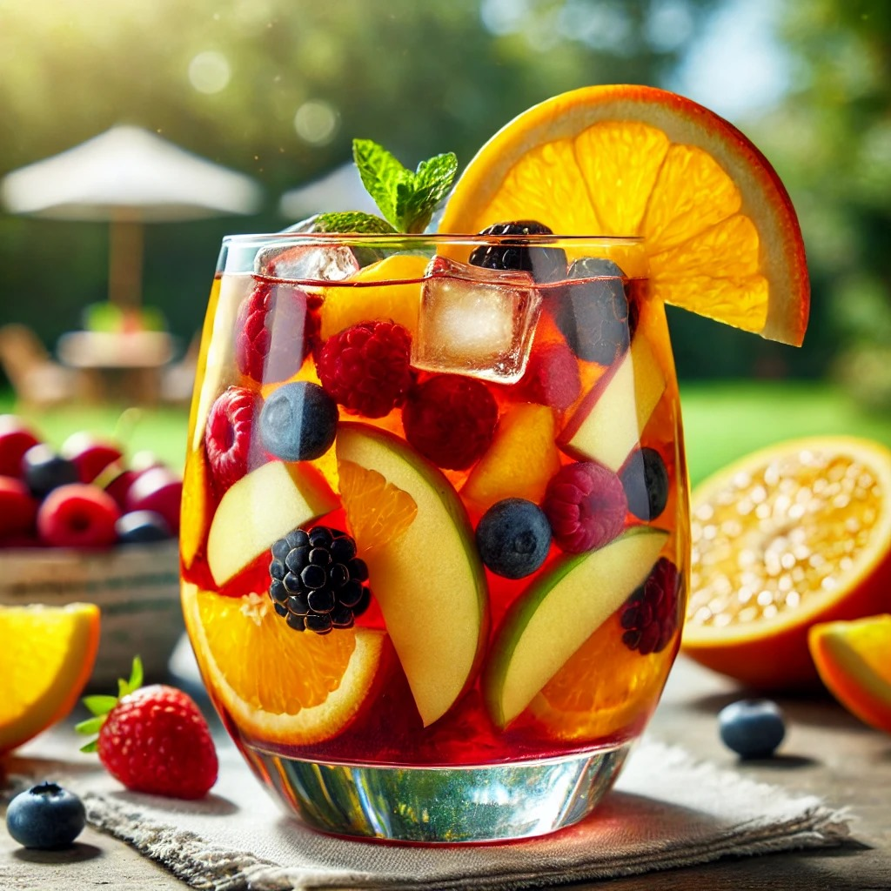
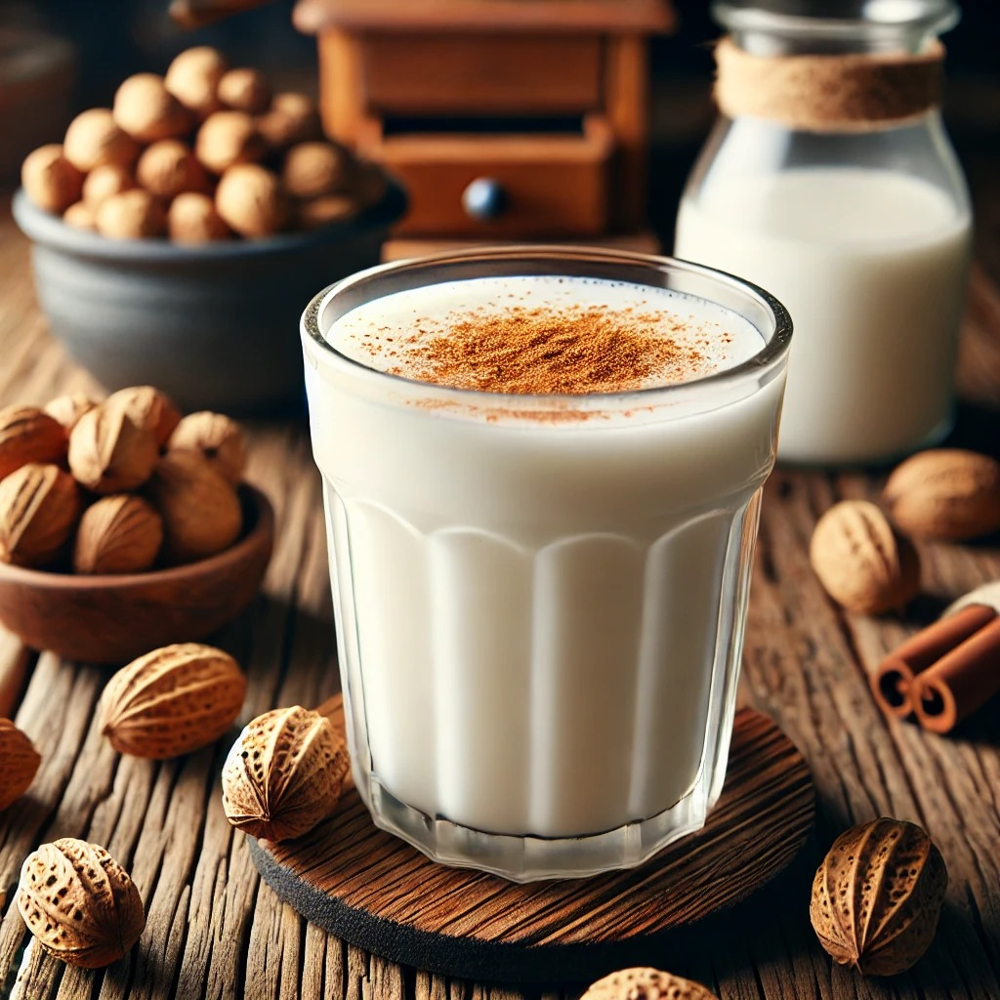
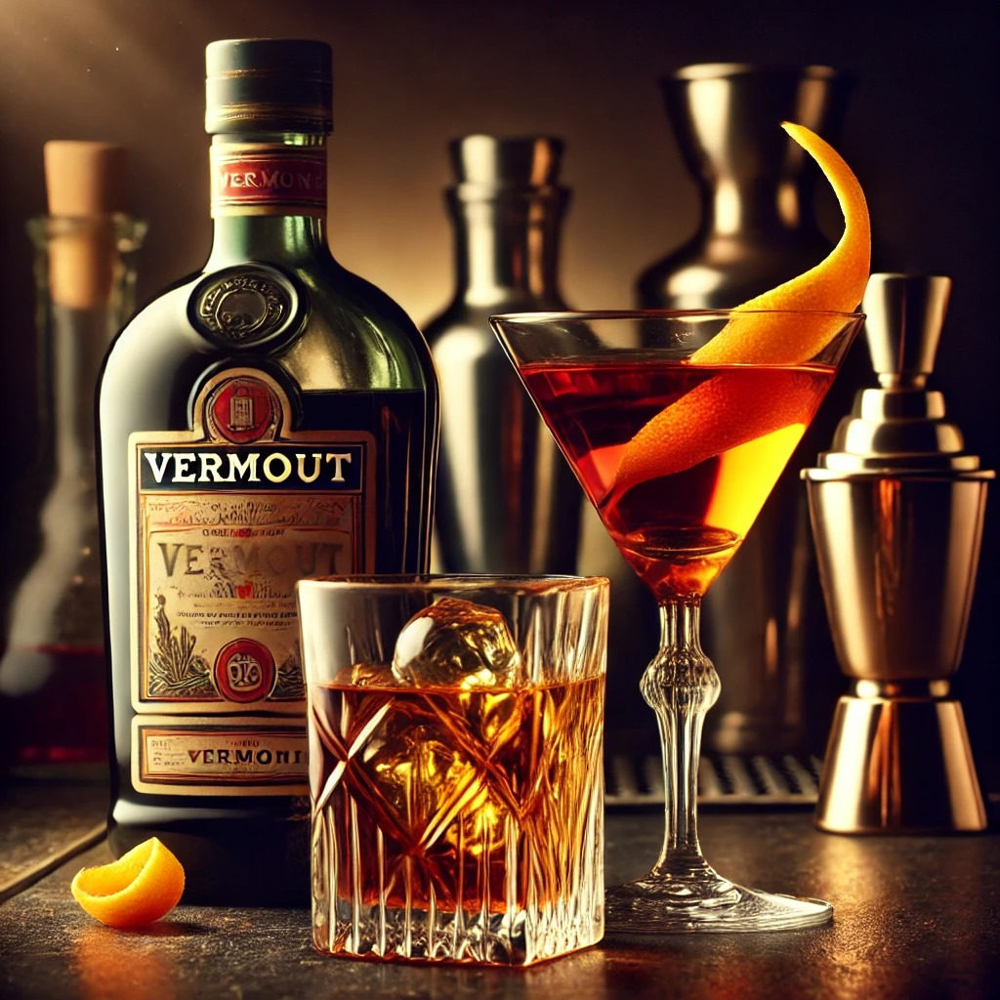

Sangría (Sangria)
- English: A refreshing wine-based drink mixed with fruit, brandy, and soda water. It is often served
chilled and is a quintessential Spanish summer drink
- Español: Una bebida refrescante a base de vino mezclada con frutas, brandy y soda. Se sirve fría y
es una bebida esencial del verano español
Tinto de Verano (Summer Red Wine)
English: A lighter version of sangría made with red wine and lemon soda, ideal for a casual and
refreshing experience.
Español: Una versión más ligera de la sangría hecha con vino tinto y gaseosa de limón, ideal para
una experiencia refrescante y casual.
Horchata de Chufa (Tiger Nut Milk)
English: A sweet and creamy drink made from tiger nuts, water, and sugar. It is especially popular in
Valencia and often enjoyed chilled.
Español: Una bebida dulce y cremosa hecha con chufas, agua y azúcar. Es especialmente popular
en Valencia y se disfruta fría.
Cava (Sparkling Wine)
English: A sparkling wine produced mainly in Catalonia, similar to champagne, often used for
celebrations or as an aperitif
Español: Un vino espumoso producido principalmente en Cataluña, similar al champán, a menudo
utilizado para celebraciones o como aperitivo.
Vermut (Vermouth)
English: Typically served with ice, a slice of orange, and olives, this fortified wine is a classic
Spanish aperitif
Español: Por lo general, se sirve con hielo, una rodaja de naranja y aceitunas. Este vino fortificado
es un clásico aperitivo español.